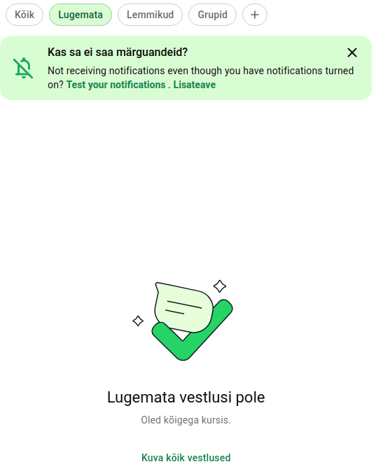

Whatly näitas märki ka tühja lugemata-loendi kõrval
Ubuntu Whatly märgistuse uurimisel tuli eristada rakenduse lugemata-loendurit ja doki rohelist märki. Kasutaja küsis: „kus need 2 lugemata sõnumit on”.
- Terminalis käivitati
whatly --unread. Whatly 7.6.6 väljund oli0. - Käivitati
whatly --reload-app. Järgmisel kuvatõmmisel oli teavitus „Account 1 — Whatly is ready” ja doki ikoonil roheline 1. - WhatsAppi vaates valiti Lugemata. Kell 14.42 tehtud pilt näitas „Lugemata vestlusi pole”, samal ajal oli doki ikoonil endiselt roheline 1.
- Kasutaja saatis kell 14.47 pildi märkusega „pärast taasavamist”: roheline 1 oli alles. Kell 14.50 saadetud pildil seda enam ei olnud.

Soovitatud samm: avada Ubuntu teavitused klahvidega Super+V ning sulgeda Whatly teavitus ristist. Järgnev pilt kinnitab märgi kadumist, kuid kasutaja ei kinnitanud sõnaliselt just selle sammu tegemist. Seetõttu ei saa teavituse sulgemist kindla põhjusena ega püsiva parandusena esitada.
Seis: märgi kadumine on pildiga kinnitatud; täpsed lõplikud lahendussammud pole allikast kinnitatud. Uue päris sõnumiga märgi õiget taastumist ja automaatset kadumist ei kontrollitud.